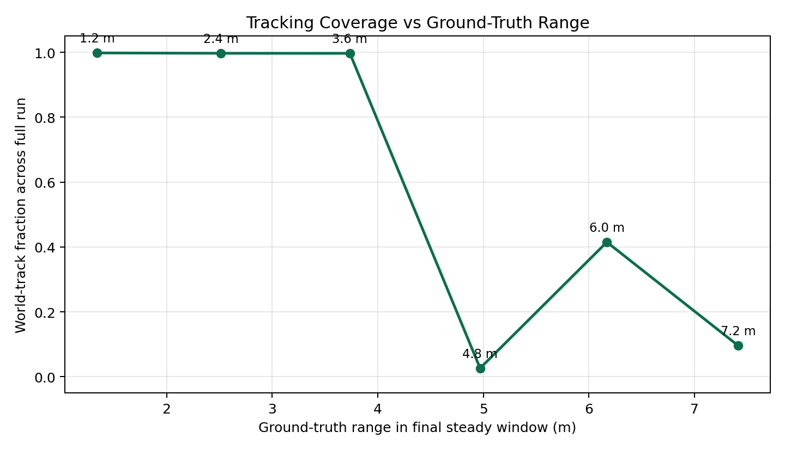
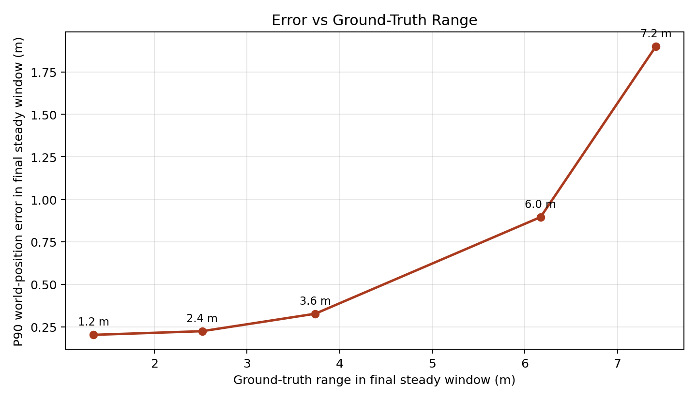
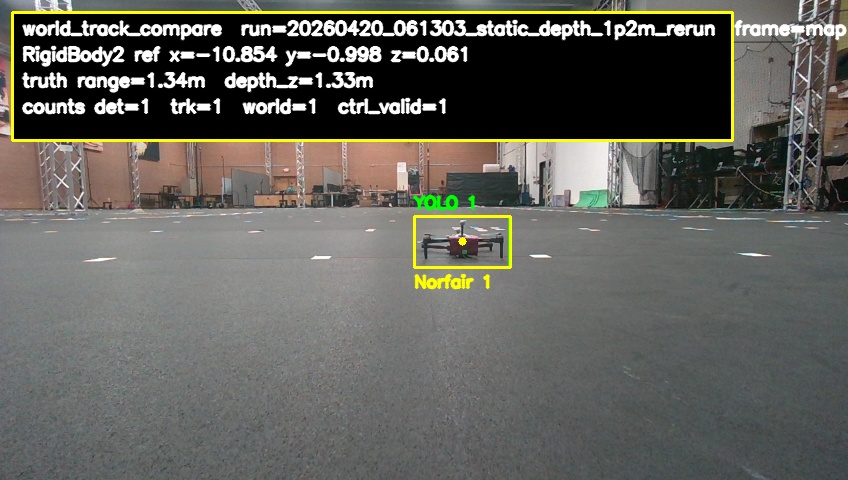
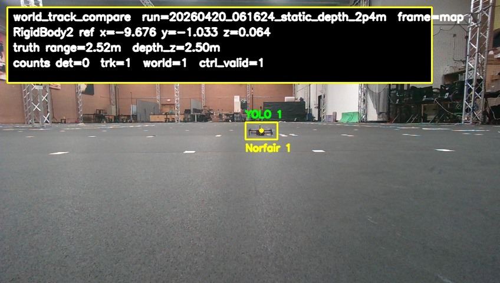
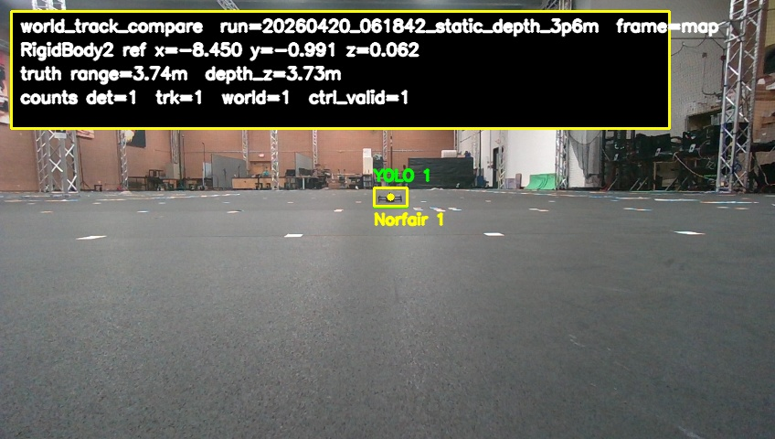
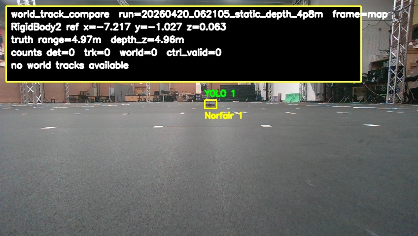
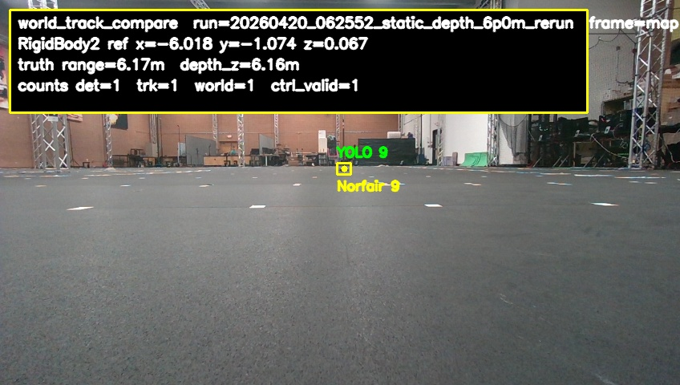

Ground truth came from mocap. In the April 20, 2026 static-depth ladder, this new engine tracked cleanly through 2.4 m, lost follow readiness by 3.6 m, collapsed sharply at 4.8 m, and stayed unreliable at 6.0 m and 7.2 m. The 6.0 m rerun did recover intermittent detections, but coverage and error were still far outside the follow gate.

Coverage stays essentially full through 3.6 m, then collapses sharply at 4.8 m. The 6.0 m rerun shows only partial recovery, and 7.2 m is effectively unusable.
Source image: email_frames/07_range_vs_tracking_fraction.png

P90 world-position error is acceptable at short range, grows past the follow gate by 3.6 m, and becomes very large once coverage breaks down.
Source image: email_frames/08_range_vs_error_p90.png

Short-range detection is stable and comfortably inside the follow gate. Ground-truth range: 1.342 m. Ground-truth forward depth: 1.326 m. Detector hit rate across the full run: 100.0%. World-track hit rate across the full run: 99.8%. Follow-usable hit rate across the full run: 99.8%. Mean estimated depth from the tracker: 1.158 m. P90 world-position error: 0.203 m.
Source image: email_frames/01_1p2m_detected.jpg

Tracking is still stable here and remains follow-ready. Ground-truth range: 2.516 m. Ground-truth forward depth: 2.503 m. Detector hit rate across the full run: 95.2%. World-track hit rate across the full run: 99.7%. Follow-usable hit rate across the full run: 99.7%. Mean estimated depth from the tracker: 2.416 m. P90 world-position error: 0.224 m.
Source image: email_frames/02_2p4m_detected.jpg

Coverage is still high, but error has grown beyond the follow gate. Ground-truth range: 3.736 m. Ground-truth forward depth: 3.730 m. Detector hit rate across the full run: 100.0%. World-track hit rate across the full run: 99.7%. Follow-usable hit rate across the full run: 99.7%. Mean estimated depth from the tracker: 3.769 m. P90 world-position error: 0.327 m.
Source image: email_frames/03_3p6m_detected_not_follow_ready.jpg

Only brief detections remained at this depth, with world tracks appearing only sporadically. Ground-truth range: 4.969 m. Ground-truth forward depth: 4.962 m. Detector hit rate across the full run: 7.1%. World-track hit rate across the full run: 2.6%. Follow-usable hit rate across the full run: 2.6%. There was no estimated depth and no position error in this window because the detector never produced a valid world track.
Source image: email_frames/04_4p8m_sparse_tracks.jpg

The rerun recovered some detections, but coverage and error stayed far outside the follow gate. Ground-truth range: 6.170 m. Ground-truth forward depth: 6.161 m. Detector hit rate across the full run: 31.3%. World-track hit rate across the full run: 41.5%. Follow-usable hit rate across the full run: 41.5%. Mean estimated depth from the tracker: 6.697 m. P90 world-position error: 0.896 m.
Source image: email_frames/05_6p0m_partial_tracks.jpg
Detections still appear occasionally, but usable tracks are effectively gone. Ground-truth range: 7.414 m. Ground-truth forward depth: 7.401 m. Detector hit rate across the full run: 16.2%. World-track hit rate across the full run: 9.6%. Follow-usable hit rate across the full run: 0.0%. Mean estimated depth from the tracker: 8.755 m. P90 world-position error: 1.900 m.
Source image: email_frames/06_7p2m_sparse_tracks.jpg